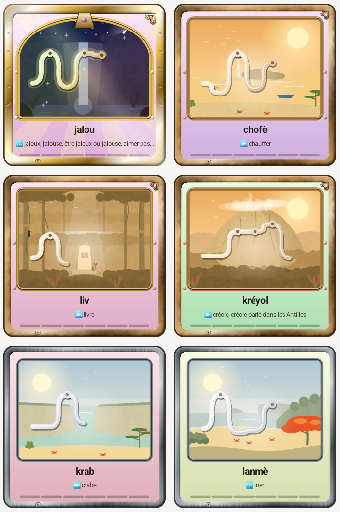

Les nouveautés,
en exclusivité
Le clavier évolue chaque semaine, et vous en profitez avant le Play Store.
Les mots gagnés deviennent des cartes
Trente lieux de Guadeloupe
Le clavier évolue chaque semaine, et vous en profitez avant le Play Store.
Open source · Zéro publicité · 100 % hors ligne · Potomitan™
